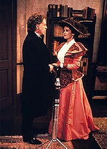
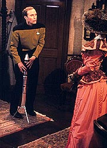
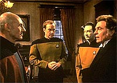
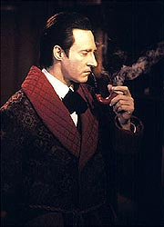

|
MANCHETE
DO EPISÓDIO
Volta de
Moriarty é feita em estilo,
com direito a "Noiva de Frankenstein"
Episódio
anterior | Próximo
episódio
Sinopse:
Data Estelar: 46424.1.
Enquanto se divertem em uma simulação de mais um caso de Sherlock
Holmes no holodeck, Geordi e Data percebem que o programa está
apresentando alguns estranhos defeitos. Eles pedem que Barclay
investigue as anomalias, mas o tenente fica chocado, ao começar
seus testes com o sistema, quando o professor James Moriarty em
pessoa se materializa diante de seus olhos. O personagem informa a
Barclay que o computador o havia criado com tamanha perfeição
originalmente que ele acabou se tornando vivo. Na cabeça do
professor, Picard o manteve refém no computador por mais de quatro
anos.
 Moriarty
requisita uma audiência com Picard. Barclay desliga o programa e
vai informar ao capitão, mas, ao que tudo indica, o professor é
capaz de se ligar e se desligar sozinho. Mais tarde, Picard, Data e
Barclay vão ao holodeck se encontrar com Moriarty. Lá, o capitão
da Enterprise informa que ainda é impossível permitir que o
professor deixe o holodeck. Mas Moriarty está inconformado; ele não
acredita em Picard e e decide deixar a sala. Para o espanto de
todos, ele consegue deixar o holodeck e ir até o corredor da nave.
Incapaz de acreditar no que acaba de ver, Picard instrui Beverly
Crusher a examinar Moriarty. Ela descobre que o impossível acontece
--uma fantasia de holodeck se tornou um ser humano vivo e normal.
Empolgado com a nova vida que se abre, Moriarty pede a Picard um último
favor: que permita dar a outro personagem, a condessa Regina
Barthalomew, a mesma consciência que o professor ganhou, e que
ajude a tirá-la do holodeck. A condessa foi escrita originalmente
para ser a paixão da vida de Moriarty. Mesmo assim, Picard não
parece tocado com a situação. Após conferenciar com Beverly, Data
e Barclay, Picard decide adiar qualquer ação até que eles possam
determinar melhor o que aconteceu com Moriarty.
Enquanto isso, a Enterprise está nas proximidade de dois planetas
gigantes gasosos que estão para colidir. Picard tenta lançar
sondas aos planetas, mas sua autorização é rejeitada pelo
computador. Moriarty então entra na ponte e informa que tomou o
controle da nave. Ele se recusa a devolvê-lo a Picard enquanto ele
não concordar em dar vida à condessa e permitir que ela também
deixe o holodeck. Sem opção, Picard concorda em tentar, para
evitar que a Enterprise seja pega na explosão resultante da colisão
planetária.
 Mais
tarde, conforme Picard e Geordi trabalham para restabelecer seu
comando sobre o computador da nave, Data descobre que todos os
eventos presenciados depois da saída de Moriarty do holodeck na
verdade eram uma simulação. Data descobre isso ao observar que
Geordi, que é destro, estava usando sua mão esquerda para realizar
as tarefas --um dos defeitos que os programas originais do holodeck
estavam manifestando quando Data e Geordi pediram o auxílio de
Barclay em primeiro lugar. No caso, Picard, Data e Barclay são
reais, pois haviam entrado no holodeck a pedido de Moriarty, mas os
demais fazem parte da simulação --criada pelo próprio professor.
Desesperado para se libertar da simulação, Picard encontra a
condessa e pede que ela convença Moriarty a devolver o controle de
navegação para ele. Em vez de aceitar o pedido do capitão,
Moriarty trabalha com Riker para ser transportado de volta à
realidade. Uma vez transportado, entretanto, ele se recusa a
devolver o controle da nave se Riker não der a ele uma nave
auxiliar. Sem escolha, Riker concorda.
Conforme Moriarty e a condessa deixam a Enterprise, o professor
devolve o comando a Picard, que rapidamente interrompe a simulação.
Ele então informa a todos sobre o verdadeiro truque: todo o
processo de teletransporte bem-sucedido e da saída de Moriarty da
Enterprise também não passaram de uma simulação. Na verdade,
Moriarty continua existindo somente no computador, em um pequeno
cubo capaz de fornecer a ele e à condessa uma rica simulação por
anos e anos.
Comentários:
"Ship in
a Bottle" tem três características que tornam o segmento
um dos melhores da temporada e da série. Primeiro, ele aproveita
uma história interessante, bem-sucedida e que pedia uma continuação
(no caso, o episódio do segundo ano "Elementary,
Dear Data"). Segundo, trabalha de forma adequada e
inovadora os temas suscitados pelo enredo, sem, entretanto,
tornar-se uma repetição do episódio original no qual é baseado.
Para completar, tem uma história extremamente inteligente.
A volta do professor Moriarty é um atrativo por si só. O ator
Daniel Davis, em sua segunda aparição como o personagem na série,
mantém o brilhantismo e a vivacidade de sua primeira atuação. E
desta vez o trabalho de roteiro com o personagem está ainda mais
eficiente. Não só Moriarty é um ser consciente, embora seja uma
simulação do holodeck, como ele mantém sem "modus operandi"
criminoso mesmo quando suas motivações são nobres, como é o caso
aqui. Fica mais evidente aqui que o professor, embora tenha ganho
consciência, não conseguiu superar sua natureza ficcional, o que
faz todo o sentido do mundo. Não é por que ganhou vida própria
que ele deveria simplesmente repudiar seu passado.
 Outro
belo trabalho que se faz com Moriarty é a criação de uma segunda
história envolvendo o personagem. Se fosse somente uma sequência
da premissa original "Moriarty ganha vida e quer sair do
holodeck", o episódio poderia ter se tornado enfadonho.
Entretanto, ao permitir que o professor miraculosamente deixe o
holodeck logo no início e introduzir um novo elemento, sua paixão
também holográfica, se mostrou uma estratégia das mais
eficientes. É praticamente uma recriação em holodeck da história
"A Noiva de Frankenstein". Mas melhor, evitando todo o mau
gosto da produção de terror e mantendo todo o conteúdo filosófico
que gira em torno da premissa.
Claro, depois descobrimos que a saída miraculosa de Moriarty do
holodeck, espetacularmente atuada por Davis (com direito a uma
imponente citação de Descartes, "cogito, ergo sum",
seguido pela tradução "penso, logo existo"), não passou
de uma fraude criada pelo professor para obter mais uma vez o
controle da Enterprise (ele já havia feito isso em "Elementary,
Dear Data") e convencer Picard a trabalhar em prol de
seu objetivo.
Essa reviravolta na trama, descoberta também de forma sutil pelo
comandante Data, ao perceber que seu amigo Geordi está
"canhoto", desde a saída de Moriarty do holodeck, torna o
episódio ainda mais complexo. E a solução final encontrada pela
tripulação --criar uma simulação dentro da simulação,
enganando Moriarty e induzindo-o a pensar que havia logrado sua
meta-- foi igualmente espetacular. Poucas vezes se viu uma execução
tão boa do batido clichê, "o feitiço vira contra o
feiticeiro".
De forma periférica, o episódio também faz um bom trabalho com o
tenente Barclay. Embora esteja longe de ser algum foco do enredo,
foi uma boa idéia colocá-lo como o "engenheiro que deve ir
consertar o holodeck" e envolvê-lo na trama. Afinal de contas,
personagens holográficos são mais reais para Reg do para qualquer
um; é interessante vê-lo em um conflito interno, cético com relação
às capacidades de Moriarty e da condessa, mas ainda assim fascinado
por sua existência e seu comportamento. Dwight Schultz mais uma vez
nos brinda com uma atuação bastante convincente e notadamente
discreta.
Os únicos personagens regulares que se mostraram úteis à trama
foram Picard e Data, apoiados pelas regularmente competentes atuações
de Patrick Stewart e Brent Spiner. O resto de elenco só cumpriu
tabela, sem qualquer real importância para o episódio (a maior
parte das aparições deles, inclusive, se deu na simulação criada
por Moriarty, um sinal claro de que não havia realmente qualquer
interesse em usá-los efetivamente na história).
 Finalmente,
é sempre bom ver a Enterprise envolvida num projeto de pesquisa
astrofísico. As tomadas de efeitos especiais envolvendo os choques
dos planetas foram extremamente bem realizadas, e a nave apareceu
realmente bem nas tomadas de abertura e fechamento do episódio.
Foram esses os principais valores de produção com destaque no
segmento. Digno de nota também é o cenário do escritório de
Holmes, mas nada que de fato não tenha sido feito antes.
Da forma como foi escrito, atuado, dirigido e executado, "Ship
in a Bottle" tem a dupla virtude de se sustentar sozinho
como um grande episódio e ao mesmo tempo dar um fechamento digno da
jornada do professor James Moriarty pela Enterprise, iniciado na
segundo ano da série. Realmente um dos grandes destaques da
temporada.
Citações:
Moriarty - "Cogito, ergo sum.
I think, therefore, I am."
("Cogito, ergo sum. Penso, logo, existo.")
Moriarty - "Policemen. I'd recognize them in any century."
("Policiais. Eu os reconheceria em qualquer século.")
Data - "Captain, I have determined how Moriarty was able to
leave the holodeck. He never did. Neither did we. None of this is
real. It is a simulation. We are still on the holodeck."
("Capitão, eu descobri como Moriarty foi capaz de sair do
holodeck. Ele nunca saiu. Nem nós. Nada disso é real. É uma
simulação. Ainda estamos no holodeck.")
Barclay - "Computer, end program!"
("Computador, terminar programa")
Trivia:
 Este é o primeiro episódio da Nova Geração exibido após
a estréia de Deep Space Nine, em 3 de janeiro 1993. Aliás,
entre o último episódio inédito da Nova Geração exibido
na época ("Chain of Command, Part
II") e "Ship in a Bottle", nada menos
do que cinco episódios de DS9 foram exibidos nos EUA.
Este é o primeiro episódio da Nova Geração exibido após
a estréia de Deep Space Nine, em 3 de janeiro 1993. Aliás,
entre o último episódio inédito da Nova Geração exibido
na época ("Chain of Command, Part
II") e "Ship in a Bottle", nada menos
do que cinco episódios de DS9 foram exibidos nos EUA.
Daniel Davis volta à série como Moriarty. Davis é mais conhecido
no Brasil como Niles, o mordomo de "The Nanny". Sua
primeira aparição havia sido em "Elementary,
Dear Data", da segunda temporada.
Este é o penúltimo episódio em que Barclay aparece na série. "Genesis",
da sétima temporada, é o último. Depois disso Reg Barclay poderá
ser visto em uma ponta em "Jornada nas Estrelas: Primeiro
Contato" e em alguns episódios de Voyager.
Ficha
técnica:
História de Frank
Abatemarco
Roteiro de René Echevarria
Direção de Alexander Singer
Exibido em 25/01/1993
Produção: 138
Elenco:
Patrick Stewart como
Jean-Luc Picard
Jonathan Frakes como William Thomas Riker
Brent Spiner como Data
LeVar Burton como Geordi La Forge
Michael Dorn como Worf
Gates McFadden como Beverly Crusher
Marina Sirtis como Deanna Troi
Elenco convidado:
Daniel Davis como
Moriarty
Dwight Schultz como Reginald Barclay
Clement Von Franckenstein como um cavalheiro
Stephanie Beacham como a condessa
Majel Barrett como a voz do computador
Episódio
anterior | Próximo
episódio
|